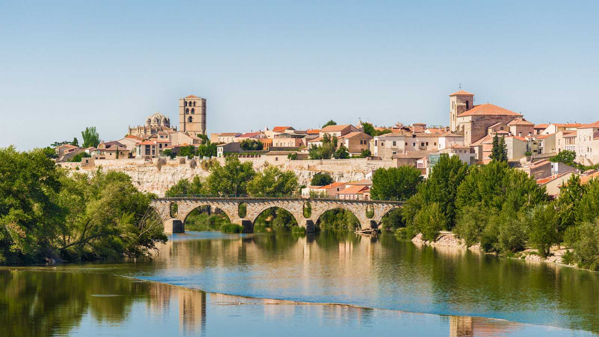

Zamora |
|||||||||
| Ávila |
|
||||||||
| Burgos |

Foto by: RTVE
Zamora es un municipio y ciudad española ubicada entre el centro y el noroeste de la península ibérica, cerca de la frontera con Portugal.
Localidades principales:
- Benavente: Benavente cuenta con 18.237 habitantes, tiene una superficie de 45,12 metros cuadrados y cuenta con una altitud de 741 msnm
- Toro: Toro cuenta con 8974 habitantes, tiene una superficie de 324,79 metros cuadrados y cuenta con una altitud de 710 msnm
- Morales del Vino: Morales del Vino cuenta con 2950 habitantes, tiene una superficie de 23,68 metros cuadrados y cuenta con una altitud de 697 msnm
- Villaralbo: Villaralbo cuenta con 1866 habitantes, tiene una superficie de 22,05 metros cuadrados y cuenta con una altitud de 711 msnm
El término municipal de Zamora tiene una extensión de 149,28 km². Es la capital de provincia situada a menos altitud de la Meseta Norte. Se ubica en el curso medio del río Duero, con una configuración longitudinal a lo largo del mismo, en la extensa región que forma la Meseta Norte, Presenta un paisaje llano, y con escasa vegetación a causa de su clima mediterráneo con rasgos de continentalidad
En el término municipal existen dos zonas claramente diferenciadas. La primera de ellas es la constituida por las vegas de los ríos Duero y Valderaduey, La ciudad fue fundada a inicios de la Edad del Bronce, siendo posteriormente ocupada durante la Edad de Hierro por el pueblo celta de los vacceos, Durante la Edad Media, Zamora volvió a ser tomada y destruida por los musulmanes al mando del emir Mohamed y después reconquistada por los cristianos Video by:MAGA PICTURES benavente y los valles Videos de interés: - Historia de Zamora por RICI Comunicación & Románico - Murallas de Zamora "La bien cercada" por Cannislupro
Los espacios culturales más importantes son los siguientes:
- Centro de Interpretación de las Ciudades Medievales. - Sala Municipal de Exposiciones, ubicada en la antigua Alhóndiga del Pan. - Aceñas de Olivares. - Biblioteca Pública del Estado. - Biblioteca Pública Municipal. - Teatro Ramos Carrión. - Teatro Principal. - Cines: Cine Barrueco (cerrado en 2014) - Archivo Histórico Provincial. - Archivo Histórico Diocesano.
Los espacios naturales más importantes:
- Parque Natural del Lago de Sanabria - Laguna de Los Peces - Reserva Natural de las Lagunas de Villafáfila - Mirador Las Barrancas - Playa de los Molinos
Las tradiciones y fiestas más famosas
- Semana Santa Zamorana: La Semana Santa zamorana está declarada de Interés Turístico Internacional desde el año 1986. Destaca por su sobriedad
- Ferias y Fiestas de San Pedro:y disciplina, además de por el valor artístico y la antigüedad de varias de sus tallas, como el Cristo del Santísimo Espíritu Santo, que data del siglo XV. La Pasión zamorana cuenta también con grupos de Mariano Benlliure, Enrique Pérez Comendador, Quintín de la Torre o Hipólito Pérez Calvo, destacando por encima del resto la producción imaginera del zamorano Ramón Álvarez. Su duración es de algo más de una semana ya que comienza el Viernes de Dolores (el anterior al Domingo de Ramos) y culmina el Domingo de Resurrección. Con una duración de una semana, tienen su punto central el 29 de junio, festividad de San Pedro. Durante ese tiempo
tienen lugar la Feria de la Cerámica, en la Plaza de Viriato y en la adyacente Plaza de Claudio Moyano, la más antigua de las que se celebran en España (desde 1972); la Feria del Ajo, en la Avenida de las Tres Cruces, y hay también exhibiciones de bailes regionales,romerías, conciertos de música, toros, y un espectáculo de fuegos artificiales junto al río como cierre.
- Climatología a tiempo real:
Pulse aquí para conocer más canciones de Zamora- Canciones de la zona: Zamora la bien cercada-Extraído de "Europeade 2001" en libre distribución
Muñeira de Riomanzanas-Cortesía del gaitero Jero Miguel
Diana de Los Pelegrines-Del CD "La Dulzaina en Zamora"de Alberto Jambrina
|
||||||||
| León | |||||||||
| Palencia | |||||||||
| Salamanca | |||||||||
| Segovia | |||||||||
| Soria | |||||||||
| Valladolid | |||||||||
| Zamora | |||||||||
| Contacto | |||||||||